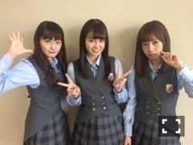
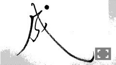

| 2016/04 07 Thu | ひめたん-0o0-その625 |

5/5 NHK「発掘！お宝ガレリア」
北野・中元で出演します
キュレーター、つまり
お宝を探す調査員として
私たちは長野県諏訪湖の辺りに
行ってきたよo(^o^)o
オンエアはゴールデンウィーク！
是非観て下さい～＊
さて、優里・中田・中元で
岩手と青森にいってきたよ＼(^o^)／
アンダーライブ東北シリーズのお話を
させていただきました。
生放送にもたくさん出演させていただき
感謝です！
これからオンエアのものも
日を改めてお伝えします
是非チェックしてみてね！

りんごジュース美味しかった♡
ライブが楽しみになりました
今度はみんなでりんごジュース飲もうね～
4/5はBOMBER-Eでしたo(^o^)o
ずっきゅん～射的ですね～♪
前回のPナイトでの私がおとなしかったので
BOMBER-Eスタッフさんびっくりしたそう。
私自身は3回目の登場です
BOMBER-Eさん
いつもありがとうございます！
4/12も観てね～

4/6 トップエール発売！
連載では美文字を習いました
中塚先生が監修された本を頂いたので
これからも時間を見つけて練習しよう。

この連載ページとは別に
かりん・佐々木・中元の3人で
インタビューもしていただいてます！
主にアンダーライブのことかな。
是非見て下さい！
～お知らせ～
4/10 マーキー
4/12 BOMBER-E
4/15 EX大衆
4/22 BRODY
4/23 UTB
4/27 ラジオ番組表
4/30 月刊エンタメ
5/5 発掘！お宝ガレリア
日テレ「NOGIBINGO!6」
4/12 1:29～放送開始です！
(＊´・ω・＊)
コメント(693)
2016/04/07 23:36